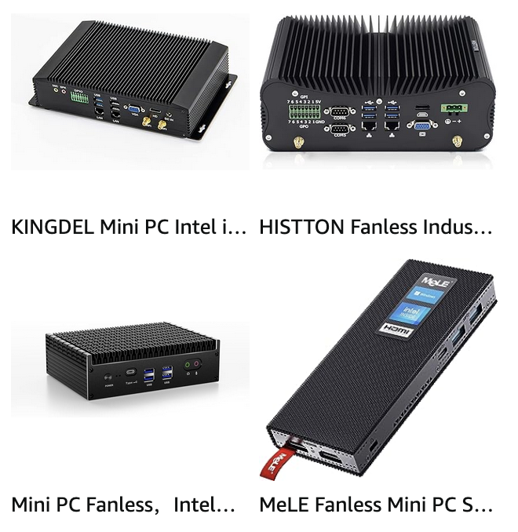

Using GPIO on an industrial mini PC#
What’s an industrial mini PC#

There are many industrial mini PCs on the market. Their common features are:
Rugged design:
metal (aluminum) case.
no fan and no vents.
Reliable hardware:
x86 CPU.
SSD.
Assortment of ports:
COM
VGA
GPIO
HDMI
USB
PS/2
LAN
Built-in WiFi
The fanless design makes them a good candidate for dusty environments. The common problem with them is the lack of documentation and support forums.
I had a chance to work with this model: Kingdel mini PC (paid link). It has an Intel CPU, Samsung SSD, and an array of GPIO ports.
Accessing GPIO on Linux#
My OS of choice is Ubuntu 22.04, but the experience is similar for most Linux distributions.
At first, it wasn’t clear how to use the GPIO ports, as most of the online GPIO documentation targets System-on-Chips (SoC) such as Arduino and Raspberry Pi.
Modern Linux exposes GPIO through a Kernel driver that mounts /dev/gpiochip[n] character devices.
The recommended utility to interact with it is gpiod.
It provides a set of CLI to enumerate, read, and write GPIO values.
In my case, there were no files starting with /dev/gpio* directory.
Which meant that the Linux Kernel hadn’t loaded the driver for my hardware.
Unlike SoC, mini PCs don’t integrate GPIO pins directly to the CPU. Instead, they’re using Super I/O chips.
BIOS must provide access to GPIO. Mine is “American Megatrends Version 2.18.1263. The Advanced tab has a menu called “SIO MISC Configuration” with the description “WDT, CASE OPEN, GPIO, DEBUG…” Inside it, I had access to the Watch Dog Timer, 2 COM port modes (RS232, RS485, and RS422), and 8 GPIO settings. Each pin is named GPIO[n], where n is between 0 and 7. The Mode can be set in Input or Output. When set to Output, you can set Output value to either Low or High. Note that changes to GPIO pin states are not real-time, and you need to Save and Exit for the changes to reflect. Through several reboot cycles, I mapped all GPIO pins to their function.
1 2 3 4 5 6 7
3V3 7 6 5 4 GND GND
---------------------------
3V3 3 2 1 0 12V 5V
1 2 3 4 5 6 7
In the diagram above, pins are numbered left-to-right as they appear on the back side of the mini PC. The top row has a 3.3V output, 4 GPIO pins, and two ground pins. The bottom row has a 3.3V output, 4 GPIO pins, 12V and 5V outputs.
BIOS doesn’t say which SIO chip is used. There are many Super I/O chips, and figuring out which one you have could be problematic. In my case, I had to open the casing and read the markings on the big square chip sitting next to the GPIO pins. It said “iTE IT8786E-I”.
Searching through Linux Kernel git repo, I found mentions of the drivers for this chip:
gpio-it78.c
/* * GPIO interface for IT87xx Super I/O chips * * Author: Diego Elio Pettenò <flameeyes@flameeyes.eu> * Copyright (c) 2017 Google, Inc. * * Based on it87_wdt.c by Oliver Schuster * gpio-it8761e.c by Denis Turischev * gpio-stmpe.c by Rabin Vincent */
Makefile
obj-$(CONFIG_GPIO_IT87) += gpio-it87.o
Kconfig snippet:
config GPIO_IT87 tristate "IT87xx GPIO support" help Say yes here to support GPIO functionality of IT87xx Super I/O chips. This driver is tested with ITE IT8728 and IT8732 Super I/O chips, and supports the IT8761E, IT8613, IT8620E, and IT8628E Super I/O chips as well. To compile this driver as a module, choose M here: the module will be called gpio_it87.Kernel config shipped with Ubuntu 22.04 for Linux 5.15:
$ grep CONFIG_GPIO_IT87 /boot/config-5.15.0-83-generic CONFIG_GPIO_IT87=m
The letter
mmeans that the module is not enabled by default.
Enabling the driver is done with the command:
sudo modprobe gpio_it87
To make the change permanent, run:
sudo echo gpio_it87 >> /etc/modules
I then discovered that Input/Output mode can be set only through BIOS, and the root user is required to set/get GPIO values. The biggest gotcha was that pin numbers in gpiolib do not match pin numbers in BIOS.
I connected each pin to an LED on a breadboard and used the following script to discover their numbers:
for i in $(seq 0 63)
do
echo -n "$i on "
sudo gpioset 0 "$i=1"
sleep 1
echo off
sudo gpioset 0 "$i=0"
done
The script iterates through all pins on chipset 0 and puts them into High for 1 second. (Before running the script, I assigned all GPIO pins to Output mode in the BIOS settings).
Here are the line numbers for use in gpioset and gpioget commands:
1 2 3 4 5 6 7
28 11 2 0
---------------------------
23 22 34 33
1 2 3 4 5 6 7
I rebooted to change pin modes to Input in BIOS and tried to get their values.
Surprisingly, all pins returned High value when nothing was attached to it. Even if I supplied a pull-down option
$ sudo gpioget -B pull-down 0 0
1
The solution was to add an external pull-down resistor. I tried 1K, 10K, and 100K. Only 1K resistor worked, driving the voltage on the input pin from 3.3V down to 0.3V, which is considered Low.